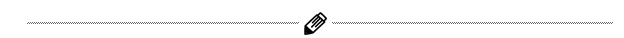

Верстка - это процесс компоновки элементов текста. То, как вы размещаете:
Вот когда вы готовите статью на сайте к публикации — это и есть верстка.
Когда в издательстве набирают текст книги, или редакция готовит очередной выпуск газеты, наполняя полосы – это опять она, родимая.
Верстка книг, газет, веб-страниц – а их много, столько же, сколько существует печатных или онлайн изданий, – каждая имеет свои особенности и правила. О них мы сегодня и поговорим.
Почему? Дело в том, что сегодня требования к версткеиоформлению текста достигли апогея. Лет 7 назад это было не так актуально, но сегодня все нужно делать очень качественно и ни в коем случае не допускать таких ошибок, как в этом отрывке! Порой они критически важны.
Итак, друзья. Сегодня время автоматизации, и то, что пять лет назад было долгой и рутинной работой, сейчас занимает несколько часов. Сделать себе сайт – час, собрать ключевые слова – несколько минут с помощью серпстата, например, и даже кластеризовать их можно за несколько кликов там же.
